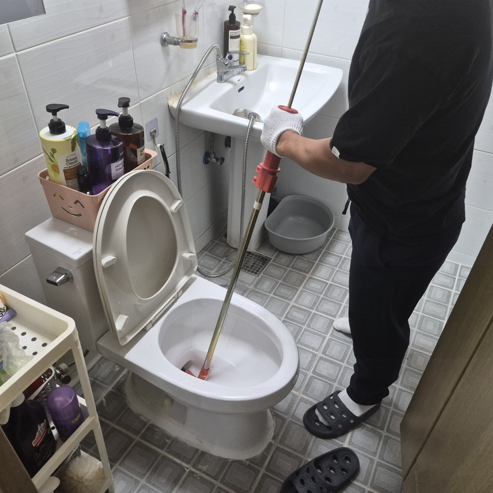
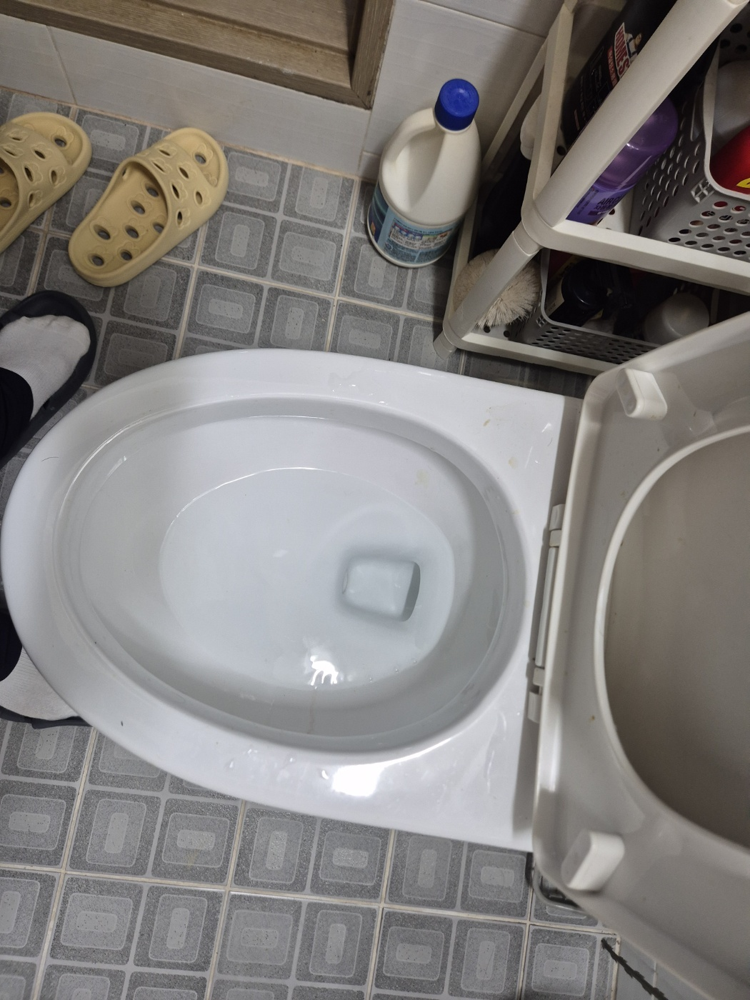
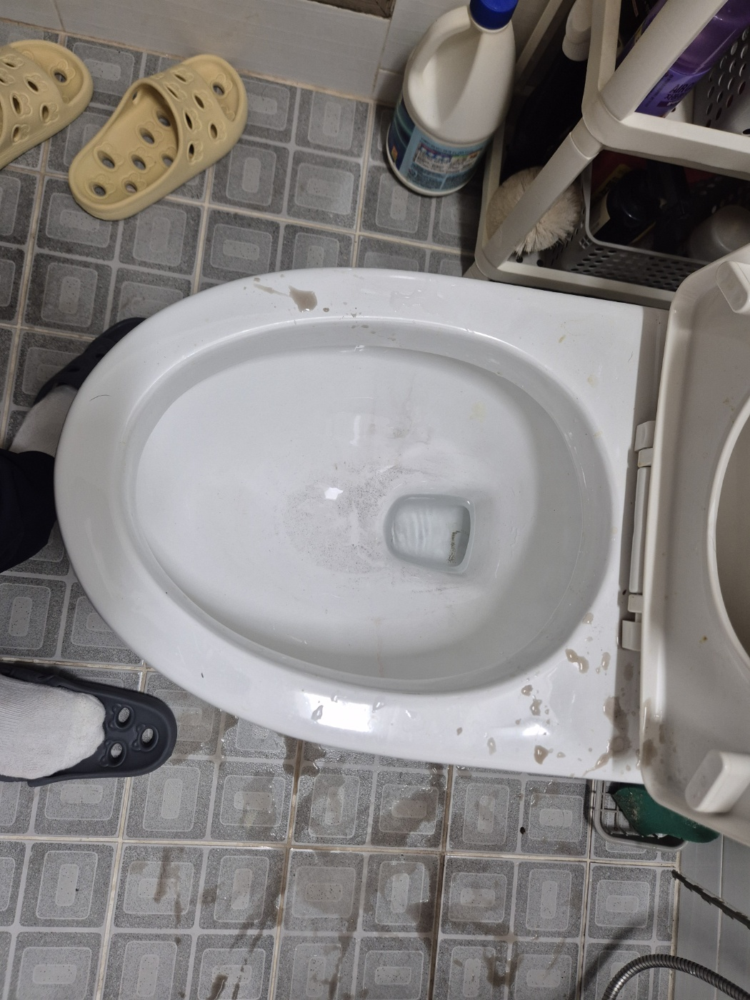

안녕하세요.. 고고고 설비입니다.. 오늘은 평택시 용이동 가정집에서 변기막힘으로 출동한 현장을 소개해드릴게요. 변기 물이 잘 안 내려가고 역류 기미까지 보인다는 연락을 받고 바로 출동했습니다.
변기 안으로 스프링건 와이어를 넣어 막힌 부분을 찾아 밀어내는 작업부터 시작했어요. 손에 전해지는 느낌으로 막힌 위치와 단단한 정도를 가늠해가며 조심스럽게 진행했습니다.
변기 안쪽에 굳은 이물질이 세정제와 뒤엉켜 있는 게 보였어요. 와이어만으로는 쉽게 풀리지 않아서, 세정제를 부어 불려가며 함께 작업했습니다.

작업 도중 막혔던 오수가 역류하면서 변기 테두리와 주변 바닥까지 튀었어요. 이런 흔적이 보일 때는 오히려 막힌 부분이 뚫리고 있다는 신호라, 바닥을 정리해가며 끝까지 밀어붙였습니다.

막힌 부분이 뚫리고 나서 물을 반복해서 내려보며 제대로 빠지는지 확인했습니다.
바닥에 튄 오수까지 깨끗하게 정리하고 마무리했어요. 변기막힘은 방치할수록 역류 범위가 커지니, 물빠짐이 둔하다 싶으면 바로 연락 주세요.
고고고 설비는 주택, 아파트, 원룸, 상가, 공장의 생활 하수 오수 배관을 관리해 주는 업체입니다. 고고고 설비에 전화 주시면 친절상담 정확한 진단 확실한 해결로 보답해 드리겠습니다!!